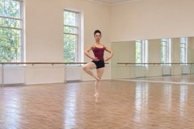
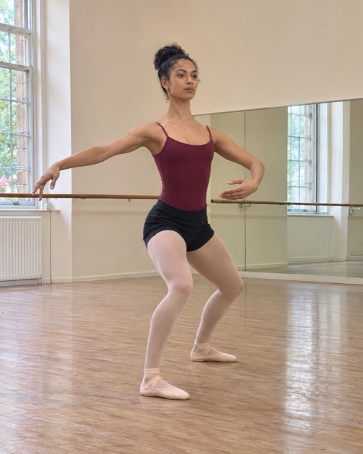
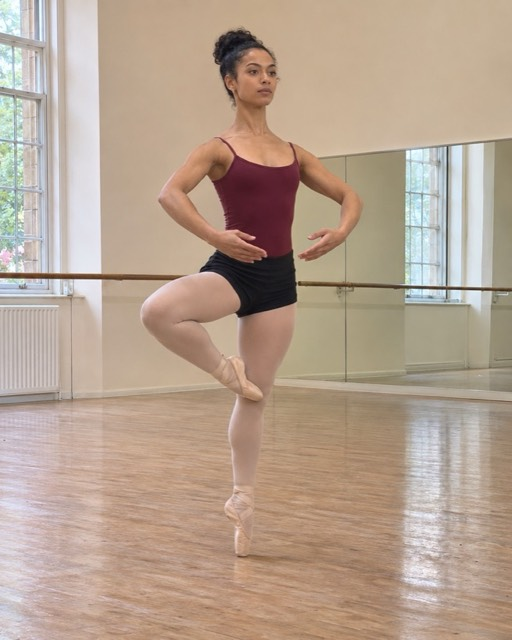
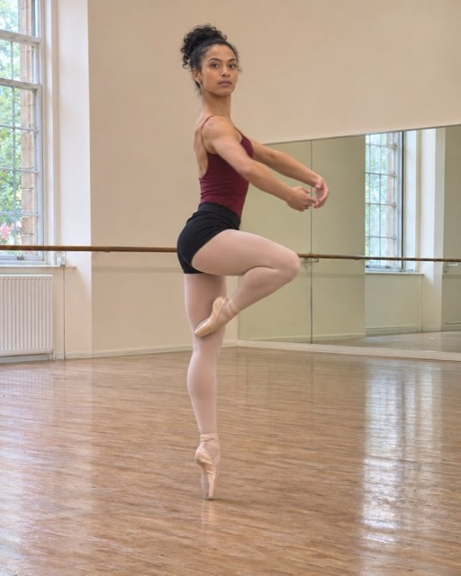
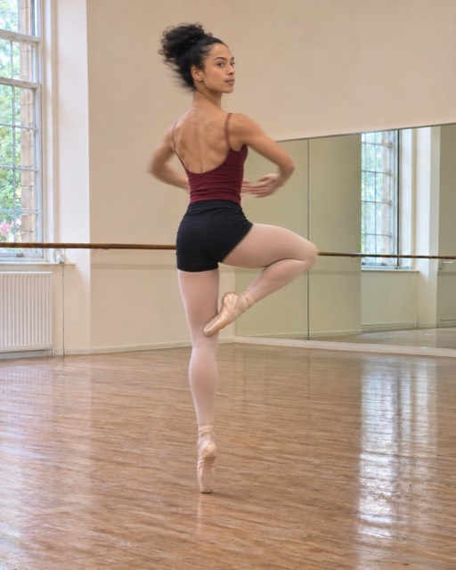
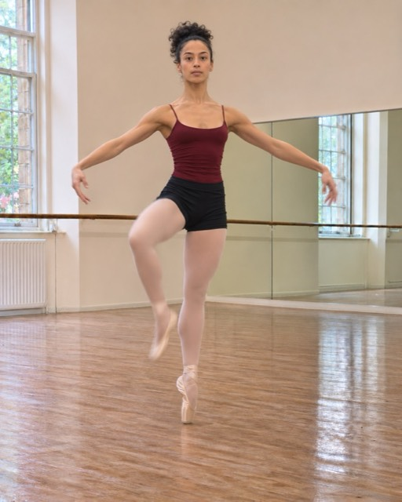
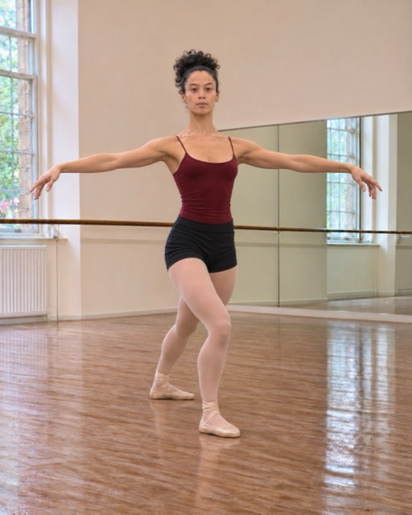

1Fourth position, knees bent, weight between both feet. One arm in front, the other open.

2Push into the floor: the standing leg rises, the other foot slides up to the knee. The arms gather in front of you.

3The body turns as one block, hips and shoulders together. The head stays on your spot as long as it can.

4The head whips round and arrives first on your spot. Keep the retiré and a long back through the whole rotation.

5The turn ends facing your spot. The foot leaves the knee without dropping, the standing leg stays straight.

6Set the foot down behind in fourth, in plié, and open the arms. Hold the finish for two counts.